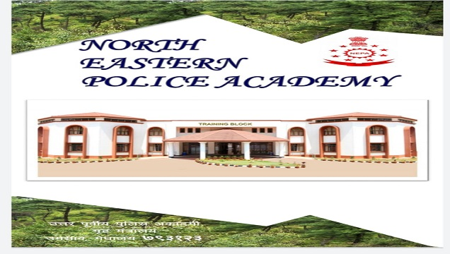
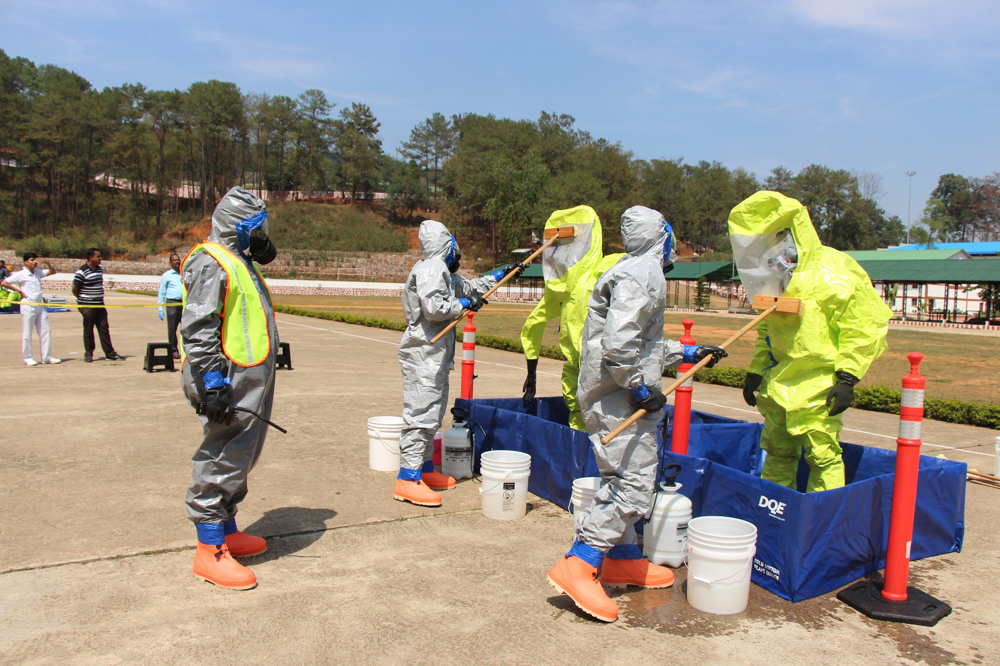

Basic Course
Objectives
One year of basic training for the directly recruited Deputy Superintendents of Police and Sub Inspectors of the North Eastern States.
- Duration
- One year
- Trainees
- DySP and SI
- States
- North Eastern States

To impart one year basic training to the directly recruited Deputy Superintendent of Police and Sub Inspectors of North Eastern States.
To make the trainees understand the prevailing socio-economic situation and law & order issues confronting the police in their state and to teach the officers about their ideal role in the context of policing.
To give an overview of the constitutional scheme of fundamental rights.
At the end of the training, the trainees should have working knowledge about the administrative structure of the government and different wings of the police department.
To equip the trainees with the art of scientific and legal investigation. At the end of the training the officer should be able to feel confident to undertake investigation of crime independently.
To make the Officers understand as to how the scientific techniques available can be used in the investigation of crime.
Joining Instructions
-
Joining Instructions of 58th Basic Course
Open PDF – Joining Instructions of 58th Basic Course (PDF, opens in new tab) -
Joining Instructions for 57th Basic Course
Open PDF – Joining Instructions for 57th Basic Course (PDF, opens in new tab)
Syllabus for Basic Course

Indoor Syllabus for Basic Course
Open PDF – Indoor Syllabus for Basic Course (PDF, opens in new tab)
Outdoor Syllabus for Basic Course
Open PDF – Outdoor Syllabus for Basic Course (PDF, opens in new tab)
Basic Course – Award Winners
Roll of Honour: All Round Best Trainee
Basic Course DySP13 recipients
| Sl. No. | Course No. | Rank | Name | State | Year |
|---|---|---|---|---|---|
| 1 | 1st | DySP | J. Bagra | Arunachal Pradesh Police Service | 1981–82 |
| 2 | 40th | DySP | Rukulu Tunyi | Nagaland Police Service | 2014 |
| 3 | 41st | DySP | Banraplang Jyrwa | Meghalaya Police Service | 2015 |
| 4 | 42nd | DySP | Rike Kamsi | Arunachal Pradesh Police Service | 2016 |
| 5 | 43rd | DySP | Dr. V. B. Rajkamal | Andhra Pradesh Police Service | 2017 |
| 6 | 44th | DySP | Thokchom Heeraj Anand | Manipur Police Service | 2018 |
| 7 | 46th | DySP | Sentiwapang | Nagaland Police Service | 2019 |
| 8 | 48th | DySP | Rishi Longdoh | Arunachal Pradesh Police Service | 2020–2021 |
| 9 | 51st | DySP | L. Nongothung Yanthan | Nagaland Police Service | 2022–2023 |
| 10 | 52nd | DySP | Ambarish Sharma | Assam Police Service | 2022–2023 |
| 11 | 53rd | DySP | Tayenjam Clinton Singh | Manipur Police Service | 2023–2024 |
| 12 | 54th | DySP | Porikhit Gogoi | Assam Police Service | 2024–2025 |
| 13 | 55th | DySP | Dipendra Adhikari | Sikkim Police Service | 2025 |
Basic Course SI50 recipients
| Sl. No. | Course No. | Rank | Name | State | Year |
|---|---|---|---|---|---|
| 1 | 1st | SI | G. Pertin | Arunachal Pradesh Police | 1982 |
| 2 | 2nd | SI | M. S. Yadav | Arunachal Pradesh Police | 1983 |
| 3 | 3rd | SI | A. M. Jamir | Nagaland Police | 1984 |
| 4 | 4th | SI | B. Gurung | Mizoram Police | 1984 |
| 5 | 5th | SI | N. Kalita | Arunachal Pradesh Police | 1985 |
| 6 | 6th | SI | S. Dey | Tripura Police | 1986 |
| 7 | 7th | SI | D. K. Guha | Tripura Police | 1987 |
| 8 | 8th | SI | P. Debnath | Tripura Police | 1988 |
| 9 | 9th | SI | M. K. Rambhadran | Arunachal Pradesh Police | 1989 |
| 10 | 10th | SI | M. Singh | Arunachal Pradesh Police | 1990 |
| 11 | 11th | SI | L. Nongpluh | Meghalaya Police | 1991 |
| 12 | 12th | SI | T. S. Jamir | Nagaland Police | 1992 |
| 13 | 13th | SI | J. Nath | Tripura Police | 1993 |
| 14 | 14th | SI | J. Das | Tripura Police | 1994 |
| 15 | 15th | SI | M. S. Biswas | Tripura Police | 1995 |
| 16 | 16th | SI | Raplang Suting | Meghalaya Police | 1996 |
| 17 | 17th | SI | I. Lolan | Arunachal Pradesh Police | 1997 |
| 18 | 18th | SI | J. Konyak | Nagaland Police | 1998 |
| 19 | 19th | SI | Zarzokima | Mizoram Police | 1999 |
| 20 | 20th | SI | S. K. Pradhan | Meghalaya Police | 2000 |
| 21 | 21st | SI | K. Yepto | Nagaland Police | 2001 |
| 22 | 22nd | SI | K. Dinesh Kumar | Manipur Police | 2002 |
| 23 | 26th | SI | Krishnendu Dev | Arunachal Pradesh Police | 2004 |
| 24 | 27th | SI | Chewang D. Bhutia | Sikkim Police | 2005 |
| 25 | 28th | SI | Mosa Zeliang | Nagaland Police | 2005 |
| 26 | 29th | SI | Bibhas Ranjan Das | Tripura Police | 2006 |
| 27 | 30th | SI | Yograj Gautam | Meghalaya Police | 2007 |
| 28 | 31st | SI | Gallant Kharumnuid | Meghalaya Police | 2007 |
| 29 | 32nd | SI | B. Marbaniang | Meghalaya Police | 2008 |
| 30 | 33rd | SI | K. Dominic | Nagaland Police | 2008 |
| 31 | 34th & 35th | SI | S. S. Liewet | Meghalaya Police | 2009 |
| 32 | 36th | SI | Olivia Asem | Manipur Police | 2010 |
| 33 | 37th | SI | T. H. Sharda Devi | Manipur Police | 2011 |
| 34 | 38th | SI | Anupa Gurung | Sikkim Police | 2012 |
| 35 | 39th | SI | Sitoshna Sharma | Sikkim Police | 2013 |
| 36 | 40th | SI | Amum Panyang | Arunachal Pradesh Police Service | 2014 |
| 37 | 41st | SI | Benhanan Sahkhar | Meghalaya Civil Defence & Home Guards | 2015 |
| 38 | 42nd | SI | T. Jongsen | Nagaland Police | 2016 |
| 39 | 43rd | SI | Keyiluting (Inspector) | Nagaland Excise | 2017 |
| 40 | 44th | SI | Bobby Sumanyan | Arunachal Pradesh Police Service | 2018 |
| 41 | 45th | SI | Ricky Phawa | Meghalaya Police | 2018 |
| 42 | 46th | SI | Mohammad Rizwan | Meghalaya Police | 2019 |
| 43 | 47th | SI | Er. James Kikon | Nagaland Police | 2020 |
| 44 | 48th | SI | Shuvam Nongbram | Meghalaya Civil Defence & Home Guards | 2020–2021 |
| 45 | 49th | SI | Rahul Das | Tripura Police | 2021 |
| 46 | 50th | SI | Baharul Islam | Assam Police | 2021–2022 |
| 47 | 51st | SI | 1. Sang Lida 2. Hirok J. Baruah | 1. Arunachal Pradesh Police Service 2. Assam Police | 2022–2023 |
| 48 | 52nd | SI | Leela Prasad Sharma | Assam Police Service | 2022–2023 |
| 49 | 53rd | SI | Ebanskem Nongtdeh | Meghalaya Police Service | 2023–2024 |
| 50 | 55th | SI | Khyothungo T. Kikon | Nagaland Police Service | 2025 |